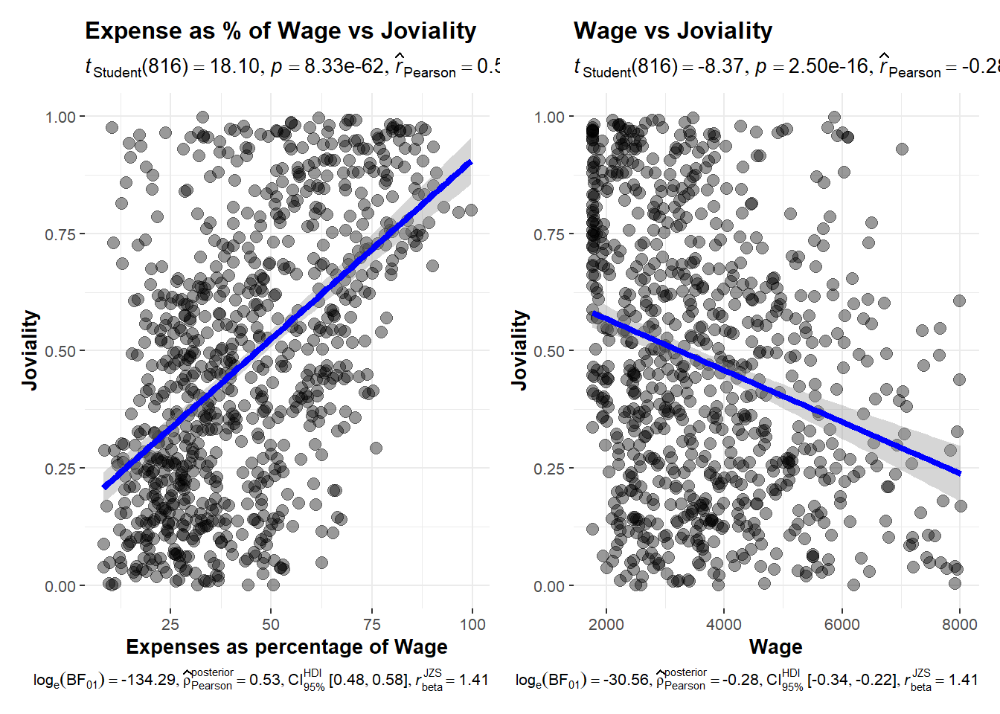

Show code
pacman::p_load(plotly, ggstatsplot, knitr, patchwork, ggdist, ggthemes,ggridges, tidyverse, pals, viridis, gganimate, reshape2, lubridate, zoo, transformr, ggiraph)A sample survey of representative residents of City of Engagement located at Country of Nowhere was conducted to collect data related to demographic and spending patterns. This data will be used to assist in community revitalization efforts, including how to allocate city renewal grant.
The objective is to use appropriate static and interactive statistical graphics methods to provide an user-friendly and interactive solution that helps city managers and planners to explore the complex data in an engaging way and reveal hidden patterns.
Two datasets are provided:
Participants.csv: provides demographic information about the residents
FinancialJournal.csv: contain information about financial transactions for different expense categories
pacman::p_load(plotly, ggstatsplot, knitr, patchwork, ggdist, ggthemes,ggridges, tidyverse, pals, viridis, gganimate, reshape2, lubridate, zoo, transformr, ggiraph)Load demographic data and data summary statistics
demo_info<-read_csv("data/Participants.csv")
summary(demo_info) participantId householdSize haveKids age
Min. : 0.0 Min. :1.000 Mode :logical Min. :18.00
1st Qu.: 252.5 1st Qu.:1.000 FALSE:710 1st Qu.:29.00
Median : 505.0 Median :2.000 TRUE :301 Median :39.00
Mean : 505.0 Mean :1.964 Mean :39.07
3rd Qu.: 757.5 3rd Qu.:3.000 3rd Qu.:50.00
Max. :1010.0 Max. :3.000 Max. :60.00
educationLevel interestGroup joviality
Length:1011 Length:1011 Min. :0.000204
Class :character Class :character 1st Qu.:0.240074
Mode :character Mode :character Median :0.477539
Mean :0.493794
3rd Qu.:0.746819
Max. :0.999234 View all columns and data type for each column
glimpse(demo_info)Rows: 1,011
Columns: 7
$ participantId <dbl> 0, 1, 2, 3, 4, 5, 6, 7, 8, 9, 10, 11, 12, 13, 14, 15, 1…
$ householdSize <dbl> 3, 3, 3, 3, 3, 3, 3, 3, 3, 3, 3, 3, 3, 3, 3, 3, 3, 3, 3…
$ haveKids <lgl> TRUE, TRUE, TRUE, TRUE, TRUE, TRUE, TRUE, TRUE, TRUE, T…
$ age <dbl> 36, 25, 35, 21, 43, 32, 26, 27, 20, 35, 48, 27, 34, 18,…
$ educationLevel <chr> "HighSchoolOrCollege", "HighSchoolOrCollege", "HighScho…
$ interestGroup <chr> "H", "B", "A", "I", "H", "D", "I", "A", "G", "D", "D", …
$ joviality <dbl> 0.001626703, 0.328086500, 0.393469590, 0.138063446, 0.8…is.na() function is also used to confirm that there are no missing values in the demo_info dataset.
#Check for mising values
any(is.na(demo_info))[1] FALSE# check unique values and their frequency for each column
demo_info# A tibble: 1,011 × 7
participantId householdSize haveKids age educationLevel interestGroup
<dbl> <dbl> <lgl> <dbl> <chr> <chr>
1 0 3 TRUE 36 HighSchoolOrCollege H
2 1 3 TRUE 25 HighSchoolOrCollege B
3 2 3 TRUE 35 HighSchoolOrCollege A
4 3 3 TRUE 21 HighSchoolOrCollege I
5 4 3 TRUE 43 Bachelors H
6 5 3 TRUE 32 HighSchoolOrCollege D
7 6 3 TRUE 26 HighSchoolOrCollege I
8 7 3 TRUE 27 Bachelors A
9 8 3 TRUE 20 Bachelors G
10 9 3 TRUE 35 Bachelors D
# ℹ 1,001 more rows
# ℹ 1 more variable: joviality <dbl>Load financial transaction data and check summary statistics
transactions<-read_csv("data/FinancialJournal.csv")
summary(transactions) participantId timestamp category
Min. : 0.0 Min. :2022-03-01 00:00:00.00 Length:1513636
1st Qu.: 222.0 1st Qu.:2022-05-24 13:25:00.00 Class :character
Median : 464.0 Median :2022-08-25 15:00:00.00 Mode :character
Mean : 480.9 Mean :2022-08-26 05:00:48.42
3rd Qu.: 726.0 3rd Qu.:2022-11-27 07:25:00.00
Max. :1010.0 Max. :2023-02-28 23:55:00.00
amount
Min. :-1562.726
1st Qu.: -5.594
Median : -4.000
Mean : 20.047
3rd Qu.: 21.598
Max. : 4096.526 View all columns and data type for each column
glimpse(transactions)Rows: 1,513,636
Columns: 4
$ participantId <dbl> 0, 0, 0, 1, 1, 1, 2, 2, 2, 3, 3, 3, 4, 4, 4, 5, 5, 5, 6,…
$ timestamp <dttm> 2022-03-01, 2022-03-01, 2022-03-01, 2022-03-01, 2022-03…
$ category <chr> "Wage", "Shelter", "Education", "Wage", "Shelter", "Educ…
$ amount <dbl> 2472.50756, -554.98862, -38.00538, 2046.56221, -554.9886…Check for missing values
any(is.na(transactions))[1] FALSELooking at the data summary, we notice a few problems:
Data type is character for nominal data (participantId), categorical data (interestGroup in demo_info and category in transactions) and ordinal data (educationLevel in demo_info). We need to use as.factor() to convert these attributes to the correct data type. We also need to add order to the educationLevel.
Also the data type is wrong for householdSize in demo_info, we used as.integer() to convert householdSize to discrete data.
# Nominal and Categorical data
demo_info$participantId<-as.factor(demo_info$participantId)
transactions$participantId<-as.factor(transactions$participantId)
demo_info$educationLevel<-as.factor(demo_info$educationLevel)
demo_info$interestGroup<- as.factor(demo_info$interestGroup)
transactions$category<-as.factor(transactions$category)
# Check categories in educationLevel using levels()
levels(demo_info$educationLevel)[1] "Bachelors" "Graduate" "HighSchoolOrCollege"
[4] "Low" # Assign orders to ordinal data educationLevel
demo_info$educationLevel<-factor((demo_info$educationLevel),
levels=c("Low","HighSchoolOrCollege","Bachelors", "Graduate"))
# Discrete data
demo_info$householdSize<-as.integer(demo_info$householdSize)Duplicated data is detected by select rows with duplicate data for financial journal. Since at each timestamp there can only be one single transaction of the same category and amount, the duplicate data should be excluded from analysis.
#check for duplicates; find all rows with the same values for all columns
transactions[duplicated(transactions),]# A tibble: 1,113 × 4
participantId timestamp category amount
<fct> <dttm> <fct> <dbl>
1 0 2022-03-01 00:00:00 Shelter -555.
2 0 2022-03-01 00:00:00 Education -38.0
3 1 2022-03-01 00:00:00 Shelter -555.
4 1 2022-03-01 00:00:00 Education -38.0
5 2 2022-03-01 00:00:00 Shelter -557.
6 2 2022-03-01 00:00:00 Education -12.8
7 3 2022-03-01 00:00:00 Shelter -555.
8 3 2022-03-01 00:00:00 Education -38.0
9 4 2022-03-01 00:00:00 Shelter -1556.
10 4 2022-03-01 00:00:00 Education -12.8
# ℹ 1,103 more rowsIn total, 1113 rows of duplicate data were hidden and excluded from analysis. distinct() function is used to keep only unique/distinct rows from a data frame. If there are duplicate rows, only the first row is preserved.
#Remove duplicate rows
transactions<-transactions %>% distinct()
# Check that duplicates have been removed
transactions[duplicated(transactions),]# A tibble: 0 × 4
# ℹ 4 variables: participantId <fct>, timestamp <dttm>, category <fct>,
# amount <dbl>transactions$amount <-abs(transactions$amount)Since wage and expenses such as shelter are paid monthly and there are only 12 months (3/2022 to 2/2023) in the dataset, only month data is needed from the timestamp column.
#mutate date
transactions <-transactions %>%
mutate(month=as.yearmon(timestamp, "%Y %m"))
head(transactions)# A tibble: 6 × 5
participantId timestamp category amount month
<fct> <dttm> <fct> <dbl> <yearmon>
1 0 2022-03-01 00:00:00 Wage 2473. Mar 2022
2 0 2022-03-01 00:00:00 Shelter 555. Mar 2022
3 0 2022-03-01 00:00:00 Education 38.0 Mar 2022
4 1 2022-03-01 00:00:00 Wage 2047. Mar 2022
5 1 2022-03-01 00:00:00 Shelter 555. Mar 2022
6 1 2022-03-01 00:00:00 Education 38.0 Mar 2022 # Use group by to get monthly expense by participantID, month and category
transactions<-transactions %>%
select(participantId,month,category,amount) %>%
group_by(participantId,month,category)%>%
summarize(monthly_amt=sum(amount))
transactions# A tibble: 44,524 × 4
# Groups: participantId, month [10,691]
participantId month category monthly_amt
<fct> <yearmon> <fct> <dbl>
1 0 Mar 2022 Education 38.0
2 0 Mar 2022 Food 268.
3 0 Mar 2022 Recreation 349.
4 0 Mar 2022 Shelter 555.
5 0 Mar 2022 Wage 11932.
6 0 Apr 2022 Education 38.0
7 0 Apr 2022 Food 266.
8 0 Apr 2022 Recreation 219.
9 0 Apr 2022 Shelter 555.
10 0 Apr 2022 Wage 8637.
# ℹ 44,514 more rows# Put value 0 for missing values, rental adjustment category is not applicable for all participants
transactions_amt<-transactions %>%
pivot_wider(
names_from=category,
values_from=monthly_amt,
values_fill = 0)
transactions_amt# A tibble: 10,691 × 8
# Groups: participantId, month [10,691]
participantId month Education Food Recreation Shelter Wage RentAdjustment
<fct> <year> <dbl> <dbl> <dbl> <dbl> <dbl> <dbl>
1 0 Mar 2… 38.0 268. 349. 555. 11932. 0
2 0 Apr 2… 38.0 266. 219. 555. 8637. 0
3 0 May 2… 38.0 265. 383. 555. 9048. 0
4 0 Jun 2… 38.0 257. 466. 555. 9048. 0
5 0 Jul 2… 38.0 270. 1070. 555. 8637. 0
6 0 Aug 2… 38.0 262. 314. 555. 9459. 0
7 0 Sep 2… 38.0 256. 295. 555. 9048. 0
8 0 Oct 2… 38.0 267. 25.0 555. 8637. 0
9 0 Nov 2… 38.0 261. 377. 555. 9048. 0
10 0 Dec 2… 38.0 266. 357. 555. 9048. 0
# ℹ 10,681 more rowsThe actual rental expense should take into account the rental adjustment for an accurate presentation. Rental expense is calculated by the following formula: Rental expense=Shelter - RentAdjustment
We will also get the total spending from combining all expenses.
transactions_amt<-transactions_amt%>%
mutate(Rent=Shelter - RentAdjustment) %>%
mutate(Monthly_spend=sum(Education, Food, Recreation, Rent))
summary(transactions_amt) participantId month Education Food
0 : 12 Min. :2022 Min. : 0.00 Min. : 32.0
1 : 12 1st Qu.:2022 1st Qu.: 0.00 1st Qu.:283.4
2 : 12 Median :2023 Median : 0.00 Median :308.6
3 : 12 Mean :2023 Mean :13.10 Mean :346.4
4 : 12 3rd Qu.:2023 3rd Qu.:12.81 3rd Qu.:422.0
5 : 12 Max. :2023 Max. :91.14 Max. :590.4
(Other):10619
Recreation Shelter Wage RentAdjustment
Min. : 0.0 Min. : 0.0 Min. : 1600 Min. : 0.000
1st Qu.: 242.0 1st Qu.: 433.4 1st Qu.: 2546 1st Qu.: 0.000
Median : 377.4 Median : 652.3 Median : 3614 Median : 0.000
Mean : 387.6 Mean : 633.8 Mean : 4265 Mean : 5.138
3rd Qu.: 514.0 3rd Qu.: 779.2 3rd Qu.: 5171 3rd Qu.: 0.000
Max. :1962.1 Max. :5829.6 Max. :21335 Max. :4809.283
Rent Monthly_spend
Min. : 0.0 Min. : 32
1st Qu.: 433.4 1st Qu.:1126
Median : 649.7 Median :1392
Mean : 628.7 Mean :1376
3rd Qu.: 778.3 3rd Qu.:1622
Max. :1556.4 Max. :3463
Since Education expense is mostly zero in value, we can exclude Education from analysis and only include education as part of total monthly expenses
median_spend<-transactions_amt %>%
select(participantId, month, Food, Recreation, Rent, Monthly_spend, Wage) %>%
group_by(participantId)%>%
summarize(Food=median(Food),
Recreation=median(Recreation),
Wage=median(Wage),
Rent=median(Rent),
Monthly_spend=median(Monthly_spend))
summary(median_spend) participantId Food Recreation Wage
0 : 1 Min. : 32.0 Min. : 0.0 Min. : 1760
1 : 1 1st Qu.:274.4 1st Qu.:158.9 1st Qu.: 2468
2 : 1 Median :301.2 Median :354.1 Median : 3230
3 : 1 Mean :313.8 Mean :312.3 Mean : 3913
4 : 1 3rd Qu.:420.3 3rd Qu.:453.4 3rd Qu.: 4611
5 : 1 Max. :582.2 Max. :819.0 Max. :17600
(Other):1005
Rent Monthly_spend
Min. : 0.0 Min. : 32.0
1st Qu.: 389.4 1st Qu.: 999.2
Median : 603.5 Median :1313.4
Mean : 552.4 Mean :1191.5
3rd Qu.: 761.2 3rd Qu.:1545.0
Max. :1556.4 Max. :2539.2
# boxplot(median_spend$Food)
# left skewed distribution
quartiles <-quantile(median_spend$Food, probs=c(.25,.75))
IQR<-IQR(median_spend$Food)
lower <-quartiles[1]-1.5*IQR
upper <-quartiles[2]+1.5*IQR
median_spend<-median_spend %>%
filter((Food>=lower) & (Food <=upper))
# After outlier removal
#boxplot(median_spend$Food)# boxplot(median_spend$Recreation)
# left skewed distribution
quartiles <-quantile(median_spend$Recreation, probs=c(.25,.75))
IQR<-IQR(median_spend$Recreation)
lower <-quartiles[1]-1.5*IQR
upper <-quartiles[2]+1.5*IQR
median_spend<-median_spend %>%
filter((Recreation>=lower) & (Recreation <=upper))
# After outlier removal
# boxplot(median_spend$Recreation)# boxplot(median_spend$Rent)
# left skewed distribution
quartiles <-quantile(median_spend$Rent, probs=c(.25,.75))
IQR<-IQR(median_spend$Rent)
lower <-quartiles[1]-1.5*IQR
upper <-quartiles[2]+1.5*IQR
median_spend<-median_spend %>%
filter((Rent>=lower) & (Rent <=upper))
# After outlier removal
# boxplot(median_spend$Rent)# boxplot(median_spend$Wage)
# left skewed distribution
quartiles <-quantile(median_spend$Wage, probs=c(.25,.75))
IQR<-IQR(median_spend$Wage)
lower <-quartiles[1]-1.5*IQR
upper <-quartiles[2]+1.5*IQR
median_spend<-median_spend %>%
filter((Wage>=lower) & (Wage <=upper))
# After outlier removal
# boxplot(median_spend$Wage)# boxplot(median_spend$Monthly_spend)
# left skewed distribution
quartiles <-quantile(median_spend$Monthly_spend, probs=c(.25,.75))
IQR<-IQR(median_spend$Monthly_spend)
lower <-quartiles[1]-1.5*IQR
upper <-quartiles[2]+1.5*IQR
median_spend<-median_spend %>%
filter((Monthly_spend>=lower) & (Monthly_spend <=upper))
# After outlier removal
# boxplot(median_spend$Monthly_spend)In order to understand whether different demographics have difference in spending pattern or financial health, the two tables need to be combined using participantId as key.
combined<-merge(demo_info, median_spend, by ="participantId")
summary(combined) participantId householdSize haveKids age
1 : 1 Min. :1.000 Mode :logical Min. :18.00
2 : 1 1st Qu.:1.000 FALSE:598 1st Qu.:29.00
3 : 1 Median :2.000 TRUE :220 Median :39.00
5 : 1 Mean :1.873 Mean :39.24
6 : 1 3rd Qu.:3.000 3rd Qu.:50.00
7 : 1 Max. :3.000 Max. :60.00
(Other):812
educationLevel interestGroup joviality Food
Low : 55 J : 93 Min. :0.000204 Min. :241.3
HighSchoolOrCollege:421 F : 90 1st Qu.:0.228201 1st Qu.:288.7
Bachelors :210 G : 87 Median :0.457937 Median :309.3
Graduate :132 H : 85 Mean :0.476588 Mean :354.4
D : 83 3rd Qu.:0.715063 3rd Qu.:427.1
A : 80 Max. :0.999234 Max. :582.2
(Other):300
Recreation Wage Rent Monthly_spend
Min. : 0.0 Min. :1760 Min. : 231.7 Min. : 500.5
1st Qu.:277.8 1st Qu.:2469 1st Qu.: 433.4 1st Qu.:1135.8
Median :382.6 Median :3398 Median : 660.2 Median :1397.5
Mean :361.3 Mean :3663 Mean : 634.1 Mean :1360.9
3rd Qu.:472.2 3rd Qu.:4554 3rd Qu.: 784.1 3rd Qu.:1580.5
Max. :800.9 Max. :8013 Max. :1301.6 Max. :2300.0
Around 30% of the town population have children and household size is relatively small ranging from 1 person to 3 people. Around 50% of the population has graduated from high school or college and only 8% have low education level.
# Distribution of Children Status
# Distribution of Children Status
d1<-demo_info %>%
count(haveKids=factor(haveKids)) %>%
mutate(pct=prop.table(n)) %>%
ggplot(aes(x = haveKids, y=n)) +
geom_col()+
geom_text(aes(x=haveKids, y= n,
label=paste0(n,"\n(", round(pct*100,1),"%)"),
vjust=-0.5))+
ggtitle("Distribution of Children Status")+
theme_minimal()+
xlab("Children Status")+
ylab("Count")+
ylim(c(0,850))
# Distribution of Education levels
d2<-demo_info %>%
count(educationLevel) %>%
mutate(pct=prop.table(n)) %>%
arrange(factor(educationLevel)) %>%
ggplot(aes(x = reorder(educationLevel, -n), y=n)) +
geom_col()+
geom_text(aes(x=educationLevel, y= n,
label=paste0(n,"\n(", round(pct*100,1),"%)"),
vjust=-0.5))+
ggtitle("Distribution of Education Levels")+
theme_minimal()+
xlab("Education Levels")+
ylab("Count")+
ylim(c(0,600))+
theme(axis.text.x = element_text(angle=10))
d1 + d2The following hypotheses were formulated to test the hypothesis that there is a relationship between education level and children status: H0: There is no association between education level and children status H1: There is an association between education level and children status We selected a confidence level of 95% and used chi-squared test for confirmatory analysis since education level and children status are categorical data and the observations are independent of one another. Since p value < 0.05, we can conclude that there is an association between children status and educational level. The group with lower education level is more likely to have children than bachelor and graduate group.
# Chi squared test for relationship between Children Status and Education Level
d12<-ggbarstats(demo_info,
x=haveKids,
y=educationLevel,
label="both"
)+
ggtitle("Significant Test of Association between Children Status and Education Level") +
xlab("Education Levels")
d12We observed right skewed distribution of monthly wage in low, high school college and bachelor education groups while there is a relatively symmetrical distribution of monthly wage in graduate group. We also can see that there seems to be difference in the wage among all education groups.
ggplot(combined,
aes(x = Wage,
y = educationLevel,
fill = factor(after_stat(quantile))
)) +
stat_density_ridges(
geom = "density_ridges_gradient",
calc_ecdf = TRUE,
quantiles = 4,
quantile_lines = TRUE) +
scale_fill_viridis_d(name = "Quartiles") +
theme_ridges()+
ggtitle("Distribution of Wage across different Education Levels")+
theme_minimal()+
ylab("Education Levels")+
xlab("Monthly Wage")Since the distribution of Wage does not follow normal distribution, we use Kruskal Wallis test to compare the mean monthly wage across different groups. Since p values are <0.5 for all groups as well as all pairwise comparisons, we can conclude that graduate education has the highest mean monthly wage followed by bachelor, high school or college and low education.
ggbetweenstats(
data = combined,
x = educationLevel,
y = Wage,
type = "np",
mean.ci = TRUE,
pairwise.comparisons = TRUE,
pairwise.display = "s",
p.adjust.method = "fdr",
messages = FALSE
) +
ggtitle("Compare mean Wage among Education Levels")+
xlab("Education Levels")
We can also observe some differences in the mean wages among interest groups D, E, F (order: E<F<D) and between group D and B (D>B) and group D and A (D>A)
ggbetweenstats(
data = combined,
x = interestGroup,
y = Wage,
type = "np",
mean.ci = TRUE,
pairwise.comparisons = TRUE,
pairwise.display = "s",
p.adjust.method = "fdr",
messages = FALSE,
package='pals',
palette="polychrome"
) +
ggtitle("Compare mean Wage among Interest Groups")+
xlab("Interest Groups")
To evaluate the cost of living and wage, intermediate calculation of the percentage of wage spent on all expenses categories (rent, food, recreation and education) was performed. In addition, since rent generally is the biggest expense, the percentage of wage spent on rent is also calculated and studied separately. People with lower wage spend a higher proportion of their wage on expenses.
combined<-combined %>%
mutate(exp_pct=Monthly_spend/Wage*100) %>%
mutate(food_pct=Food/Wage*100) %>%
mutate(rent_pct=Rent/Wage*100) %>%
mutate(recreation_pct=Recreation/Wage*100)t test was performed to check the relationship between expense and wage. The Pearson correlation coefficient is -0.78 and p value <0.05, showing moderate negative correlation between expense as a percentage of wage and wage. This means that people with lower wage are more likely to spend a higher proportion of their wage.
p <- ggscatterstats(
combined,
x = Wage,
y = exp_pct,
marginal=FALSE
)+
ggtitle("Expense as a percentage of Wage versus Wage")+
ylab("Expenses as percentage of Wage")
pWrangle data to get the demographic data combined with transaction by month
trend<-transactions_amt %>%
group_by(month) %>%
summarise(Food=median(Food),
Rent=median(Rent),
Recreation=median(Recreation),
Wage=median(Wage),
Monthly_spend=median(Monthly_spend),
count=n())
# head(trend)Remove March record because of abnormally high transaction counts and convert table to long form for plotting.
# Remove Mar 2022 record
trend<-trend[-1,]
# Convert table to long form
trend<-trend %>%
gather("id", "value", 2:6)
# convert month to date data type for plotting
trend$month<-as.Date(trend$month)
# head(trend)We can see from the plotting of the different transaction categories over time that the median expenses on food and recreation and Wage are trending down while rent is stable.
trend %>%
filter(id=='Food')%>%
ggplot(aes(x = month , y = value )) +
geom_point()+
geom_line()+
scale_color_viridis_d()+
theme_minimal()+
ggtitle("Trend of Median expenses on Food over time")+
ylab("Amount in $")+
xlab("Month")+
scale_x_date(date_breaks="2 month", date_labels="%m-%Y")trend %>%
filter(id %in% c('Rent')) %>%
ggplot(aes(x = month , y = value)) +
geom_point()+
geom_line()+
theme_minimal()+
ggtitle("Trend of Median expenses on Rent over time")+
ylab("Amount in $")+
xlab("Month")+
scale_x_date(date_breaks="2 month", date_labels="%m-%Y")+
theme(legend.position="none")trend %>%
filter(id ==c('Recreation'))%>%
ggplot(aes(x = month , y = value)) +
geom_point()+
geom_line()+
scale_color_viridis_d()+
theme_minimal()+
ggtitle("Trend of Median expenses on Recreation over time")+
ylab("Amount in $")+
xlab("Month")+
scale_x_date(date_breaks="2 month", date_labels="%m-%Y")trend %>%
filter(id %in% c('Wage')) %>%
ggplot(aes(x = month , y = value)) +
geom_point()+
geom_line()+
theme_minimal()+
ggtitle("Trend of Median expenses on Wage over time")+
ylab("Amount in $")+
xlab("Month")+
scale_x_date(date_breaks="2 month", date_labels="%m-%Y")+
theme(legend.position="none")We observed bimodal distribution of joviality in group with low or bachelor education with a higher percentage and a trimodal distribution in high school or college and graduate education.
ggplot(demo_info,
aes(x = joviality,
y = educationLevel,
fill = factor(after_stat(quantile))
)) +
stat_density_ridges(
geom = "density_ridges_gradient",
calc_ecdf = TRUE,
quantiles = 4,
quantile_lines = TRUE) +
scale_fill_viridis_d(name = "Quartiles") +
theme_ridges()+
ggtitle("Distribution of Joviality across different Education Levels")+
theme_minimal()+
ylab("Education Levels")+
xlab("Joviality")+
geom_vline(aes(xintercept=0.5),
color="grey30",
linetype="dashed",
linewidth=1)Since the joviality of all education level groups is not normally distributed, Kruskall Wallis test was performed to test the hypotheses. We chose a confidence level of 95%. We conclude that there is no difference in joviality among education groups
ggbetweenstats(
data = demo_info,
x = educationLevel,
y = joviality,
type = "np",
mean.ci = TRUE,
pairwise.comparisons = TRUE,
pairwise.display = "s",
p.adjust.method = "fdr",
messages = FALSE
)+
ggtitle("Compare mean Joviality across different Education Levels")+
ylab("Education Levels")+
xlab("Joviality")Joviality is positively correlated with higher percentage of wage spent on expenses but negatively correlated with wage.
j1<-ggscatterstats(
data = combined,
x = exp_pct,
y = joviality,
marginal = FALSE,
)+
ggtitle("Expense as % of Wage vs Joviality")+
xlab("Expenses as percentage of Wage")+
ylab("Joviality")
j2<- ggscatterstats(
data = combined,
x = Wage,
y = joviality,
marginal = FALSE,
)+
ggtitle("Wage vs Joviality")+
xlab("Wage")+
ylab("Joviality")
j1 + j2
Joviality is also positively correlated to recreation, food and rent expense. In addition, people who spend more of their wage on one expense category tend to spend more on other categories as well.
combined %>%
select(joviality, recreation_pct, food_pct, rent_pct) %>%
ggcorrmat(colors = c("#B2182B", "white", "#4D4D4D"),
matrix.type = "lower"
)